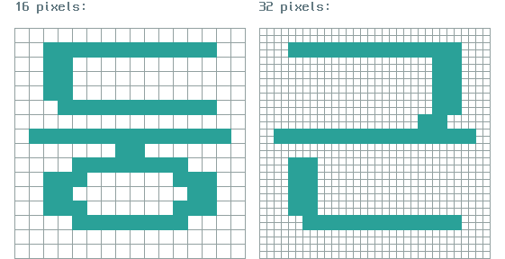
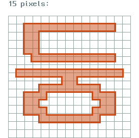

Neo둥근모 글꼴 사용 가이드라인
메인 페이지로 돌아가기
Neo둥근모는 TrueType 윤곽선 글꼴입니다. 하지만 이 글꼴의 윤곽선은 비트맵 글꼴의 모양을 그대로 유지하도록 만들어져 있습니다. 이러한 특징 때문에 대부분의 컴퓨터 디스플레이에 표시할 목적으로 이 글꼴을 사용하는 경우에는 아래의 가이드라인에 최대한 따라 주어야 최상의 결과물을 얻을 수 있습니다.
예외
다만, 이 글꼴을 인쇄물에 사용하거나 400ppi 이상의 초 고밀도 디스플레이에 표시할 목적으로 사용하는 경우에는 아래 가이드라인을 엄격하게 준수하지 않아도 됩니다.
글꼴의 크기
글꼴의 크기는 16픽셀의 배수로 맞추어 주시기 바랍니다.

위의 그림에서 보이는 것과 같이, 글꼴의 크기가 16픽셀의 배수인 경우에는 글자의 윤곽선이 디스플레이의 픽셀 경계에 딱 맞기 때문에 글자가 깔끔하게 표시됩니다.

반면에, 글꼴의 크기가 16픽셀의 배수가 아닌 경우에는 글자의 윤곽선 중 일부가 디스플레이의 픽셀 경계 사이에 걸치기 때문에 흐릿하게 표시됩니다.
글꼴의 스타일
볼드체나 이탤릭체 등의 글꼴 스타일을 적용하지 마세요.
텍스트가 못나게 표시됩니다.